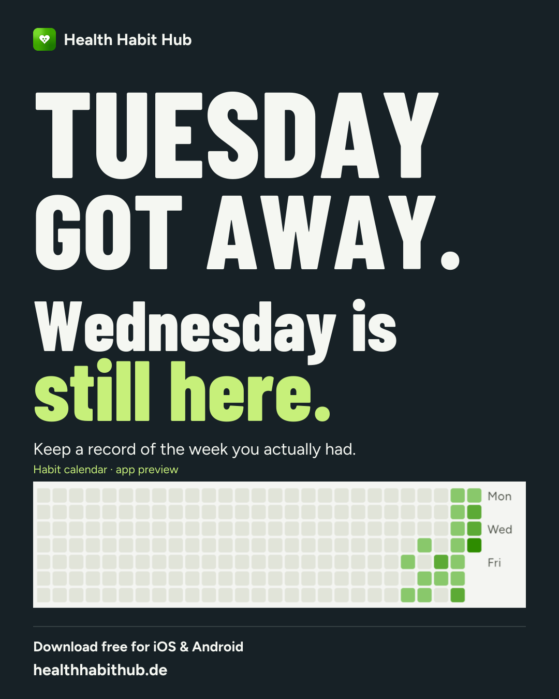
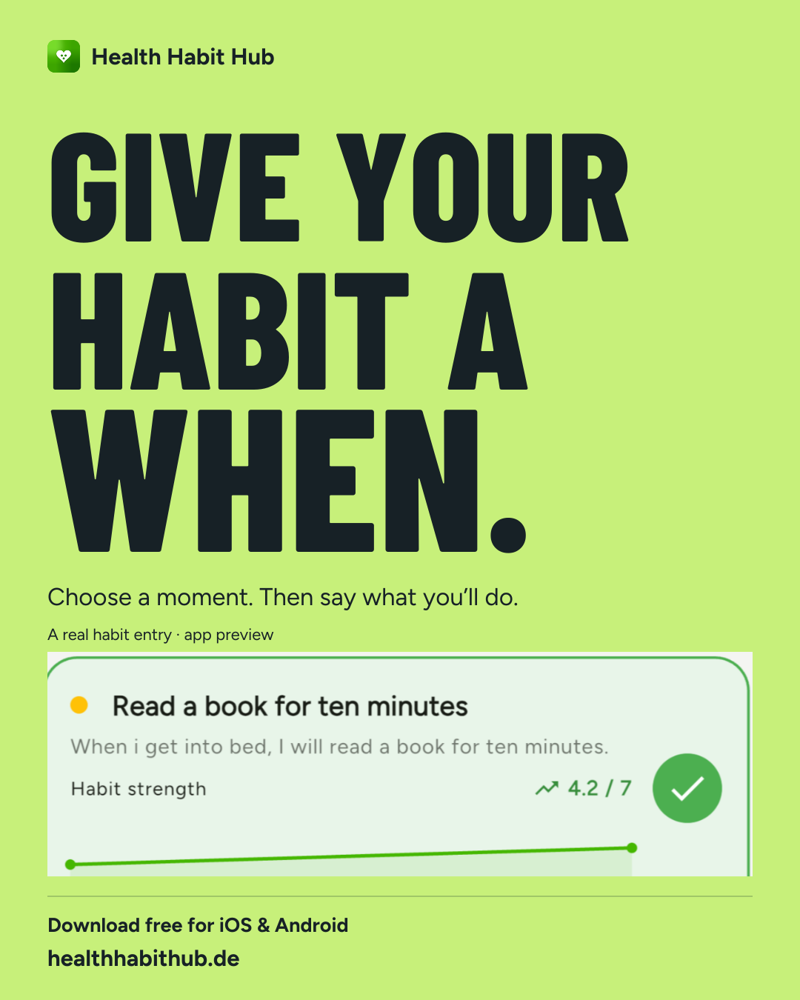

Tuesday got away. Wednesday is still here.
A real calendar detail and a line that makes room for an ordinary week.
Download this image
Download post text
Three revised picture campaigns with a more conversational voice, genuine app details and matching English and German post text.

A real calendar detail and a line that makes room for an ordinary week.
Download this image
The actual reading habit from the app explains the planning feature.
Download this image
Everyday language makes the research purpose personal and easy to understand.
Download this imageThe new motion post brings the planning idea to life, shows the actual app and invites a free download.
Silent, with readable on-screen copy. Uses genuine phone footage originally rendered in PromoStudio. The same specific voice carries through from the posters.
The artwork uses code-authored vector typography and unchanged app-screen inserts. Preview values are examples from the app image, not study results or a real person’s Tuesday. The earlier campaign remains available separately.